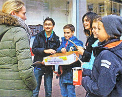

Heinz Wolf seit 37 Jahren in der Regionalgruppe von terre des hommes engagiert
Aktive Hilfe für Kinder in Not
Seit ihrer Gründung 1977 ist die Re gionalgruppe Murgtal/ Mittelbaden von terre des hommes neben der Regi onalgruppe Stuttgart die aktivste in Baden-Württemberg. Von Anfang an dabei ist Heinz Wolf aus Oberndorf, der zusammen mit seiner Ehefrau vor 37 Jahren die Arbeitsgruppe gründete. Einen großen Tag erlebte Heinz Wolf am 6. Dezember. Anlässlich des Internationalen Tages des Ehrenamtes überreich te ihm Ministerpräsident Winfried Kretschmann das Verdienstkreuz am Bande des Verdienstor dens der Bundesrepublik Deutschland. Gemeinsam mit 21 weiteren Bürgern erhielt Wolf die Auszeich nung im Neuen Schloss in Stuttgart. „Nächstenliebe, Hilfsbereitschaft und Solidarität sind Tugenden und Werte, die nicht von oben herab verordnet werden können. Diese müssen mit Leben erfüllt und weiter gegeben werden", so der Ministerpräsident in sei ner Laudatio.
Seinen ersten Kontakt zu ter re des hommes (tdh) hatte das Ehepaar Wolf, weil es ein Kind adoptieren wollte. Beide erkannten schnell, dass die Organisation viel wertvolle re Arbeit leistet, nämlich den Kindern vor Ort in ihrer Hei mat eine Zukunft zu bieten. Sie nahmen Abstand von einer Adoption und machten sich mit der Arbeit von tdh vertraut. Die Organisation bezeichnet sich selbst als entwicklungspolitisches Kinderhilfswerk und sieht ihre Aufgabe darin, mit kleinen überschaubaren Projekten Kindern überall in der Welt zu ihren elemen taren Menschenrechten zu verhelfen. Gegründet wurde tdh 1960 von einem Schwei zer Journalisten unter seinem Eindruck des Algerienkrieges. Er nannte das Hilfswerk nach einem Romantitel von Antoine Saint-Exupery, was frei übersetzt „Erde der Menschlichkeit" bedeutet. Seine erste Aktion damals war die Versorgung von Kindern in algerischen Flüchtlingslagern. 1966 schlössen sich die in vielen Ländern entstandenen nationalen Ableger des Hilfswerks zu einer internationalen Organisation mit Sitz in Genf zusammen. Unter deren Dach kämpfen inzwischen neun Sektionen aus Europa gegen Mangelernährung, Kinderar beit, Kinderhandel, Kinderprostitution, den Missbrauch von Kindersoldaten, Maßnahmen zur Bildung und Ausbildung und die Resozialisierung von Straßenkindern. Ebenso wird immer wieder Soforthilfe bei Krisen oder Katastrophen geleistet.
In Deutschland war ebenfalls ein Krieg der Auslöser für die Gründung der ersten natio nalen Gruppe. Die täglichen Bilder des Vietnamkrieges von vielen verletzten Kindern ver anlasste Menschen in Stutt gart, sich für diese zu enga gieren. Sie sammelten Geld, um verletzten vietnamesischen Kindern eine medizinische Ver sorgung in deutschen Kran kenhäusern zu ermöglichen. In den daraus entstandenen regionalen Arbeitsgruppen werden inzwischen durch verschie dene Aktivitäten und Aktionen viele Menschen angesprochen. Neben der Sensibilisierung für die Probleme der Kinder in der ganzen Welt werden dabei auch Spendenerlöse erzielt. Bei der tdh-Arbeitsgruppe Murg tal/Mittelbaden haben sich inzwischen drei Aktionen, die jährlich stattfinden, fest etab liert. Die Radbörse im Frühjahr, eine Konzertveranstaltung und der Basar im November. Bis vor ein paar Jahren fand auch noch regelmäßig im Herbst ein Kinderfest statt. Dieses wurde eingestellt, da der Veranstal tungsort nicht mehr zur Verfügung steht. Daneben gibt es immer wieder Einzelaktionen, wie zum Beispiel der Verkauf des Kunstkalenders des inzwi schen verstorbenen Kunstpro fessors Thomas Grochowiak. Mit dem Erlös aus diesem Kalenderverkauf in Höhe von 17.000 Euro gelang es, viele Mädchen und junge Frauen in Afrika aus der Zwangspros titution zu befreien und ihnen ein Bildungsprogramm zu er möglichen. Weitere wichtige Einnahmequellen sind Bene fizkonzerte. Hier traten neben vielen einheimischen Musikern schon Künstler wie das Peter Lehel Quartett im Bereich Jazz oder das Adorno-Quartett mit Kammermusik vom Feinsten auf. Peter Lehel ist inzwischen zu einer Art Institution in der Arbeitsgruppe geworden und reist neben seinem Jazzquar tett auch immer wieder mit anderen Künstlern an.
Heinz Wolf ist es jedoch ge nauso wichtig, die vielen Spon soren zu erwähnen, die meist schon seit Jahrzehnten mit Anzeigen in Flyern und größe ren Einzelspenden die Arbeits gruppe unterstützen. Seinen eigenen ehrenamtlichen Ein satz schätzt er nach einigem Kopfrechnen auf ungefähr 350 Stunden im Jahr. Viel wichti ger ist nach seiner Meinung aber die Nennung des bishe rigen Spendenaufkommens. Die Erlöse aus den unzähligen Aktionen und Aktivitäten des Hilfswerks im Zeitraum von 1977 bis 2014 betragen 2,7 Millionen Euro. Die Spender werden in einer viermal im Jahr erscheinenden terre des hommes-Zeitung über jedes einzelne Projekt detailliert in formiert. Im Jahresbericht gibt tdh einen Überblick über die Schwerpunkte der Arbeit und die Verwendung der Gelder. Die Arbeitsgruppe Murgtal/Mittelbaden wird wegen der Höhe der Spendenaufkom men jährlich vom Finanzamt geprüft. Verwaltungskosten entstehen in der Gruppe außer Porto so gut wie keine. In der Geschäftsstelle in Osnabrück kommt man laut Wirtschafts prüfungsgesellschaft auf Kos ten von maximal fünf Prozent der Spendensumme. Die letzte große Aktion der Arbeitsgruppe Murgtal/Mittel baden war der traditionelle Ba sar mit Kunsthandwerk in der Wörtelhalle. Rund 2.500 Besu cher und 70 Helfer sorgten für einen Erlös von 14.000 Euro, der Flüchtlingskindern aus Sy rien und dem Nordirak helfen soll, besser über den Winter zu kommen. Das ist ein neues Rekordergebnis. Neben vielen Kunsthandwerkern, die ihre Arbeiten vorführten und ver kauften, gab es Unterhaltung für Kinder und der Sternekoch Wolfgang Raub von Raubs Landgasthaus in Oberndorf sorgte für ein schmackhaftes Mittagessen.
Die nächste große Veranstal tung ist die 25. Radbörse im Frühjahr. Diese wird mit Unter stützung der Radsportfreunde Kuppenheim, dem RadHaus Kastner und der Sparkasse Baden-Baden Gaggenau wieder die größte ihrer Art in der Region sein.
Wer bei terre des hommes mitarbeiten möchte, findet in Heinz Wolf unter Telefon 07225 75543 einen dankba ren Ansprechpartner.
Ministerpräsident Winfried Kretschmann verleiht Heinz Wolf das Bundesverdienstkreuz am Bande
Festakt anlässlich des Internationalen Tags des Ehrenamts im Neuen Schloss in Stuttgart
Am vergangenen Samstag wurde Heinz Wolf von Ministerpräsident Winfried Kretschmann im Rahmen eines Festaktes anlässlich des Internationalen Tags des Ehrenamts mit dem Verdienstorden der Bundesrepublik Deutschland im Marmorsaal des Neuen Schlosses in Stutt gart ausgezeichnet.
1977 waren Heinz Wolf und seine Frau Anne die Hauptinitia toren der heute selbstständigen „terre des hommes (tdh)- Arbeitsgruppe Murgtal/Mittelbaden". Wolf ist bis heute die federführende Hand der tdh-Arbeitsgruppe. Zahlreiche Akti vitäten gehen auf seine Initiativen zurück: Kinderfeste, Rad börsen, Herbst- und Adventsbasare, Klassik- und Rockkon zerte, Ausstellungen, Verkäufe von Kunstkalendern, um nur die Wichtigsten zu nennen. Sponsoren- und Spendengelder persönlich bei Firmen und Unternehmen in der Region einzusammeln, dafür war und ist sich Heinz Wolf bis heute nicht zu schade. Seit 37 Jahren ist Wolf Sprecher der „tdh-Arbeits gruppe Murgtal/Mittelbaden", die bis heute mehr als 2,6 Mil lionen Euro an Hilfsgeldern zusammengesammelt hat.
Heinz Wolf mit Ministerpräsident Winfried Kretschmann, SPD-Landtagsabge ordneter Ernst Kopp (rechts) und Bürgermeister Karsten Mußler im Neuen Schloss Stuttgart
Am 1. April 1975 ist Heinz Wolf in die Sozialdemokratische Partei Deutschlands eingetreten. Er war einige Jahre erster Vorsitzender des SPD-Ortsvereins Kuppenheim, zuständig für Öffentlichkeitsarbeit, Beisitzer und Kreis delegierter und ist bis heute Mitglied des Ortsvereinsvorstands.
Vom 20. April 1975 bis 24. Juni 2013 war Wolf Stadtrat, wurde acht Mal hintereinander gewählt und ist damit „Rekordhalter" mit 38-jähriger Gemeinderatszugehörigkeit. Als Vorsitzender und Stellvertreter übernahm er viele Jahre Verantwortung an der Fraktionsspitze. Er war langjähriger Vertreter in der Verbandsversammlung des Nachbarschafts verbands Bischweier/Kuppenheim, langjäh riges Mitglied im Technischen Ausschuss, stellvertretendes Mitglied im Umlegungsausschuss, im Cuppamare-Beirat und im Arbeitskreis „Biotopvernetzung Kuppenheim". Wolf erhielt am 12. November 1995 die Eh renmedaille des Gemeindetags Baden-Württemberg für 20-jährige Gemeinderatstätig keit und am 24. Juli 2000 wurde er mit der Stadtehrennadel in Gold für 25-jährige Ge meinderatstätigkeit von Bürgermeister Wer ner Trauthwein ausgezeichnet. Am 9. Mai 2005 erhielt er die Ehrenmedaille in Gold des Gemeindetags Baden-Württemberg sowie am 16. Januar 2011 das Verdienst abzeichen in Gold des Städtetags Baden-Württembergs für 30-jährige Gemeinderatstätigkeit von Bürgermeister Karsten Mußler.
Im April 2010 gründete sich der „Arbeitskreis Stolpersteine in Kuppenheim", der sich für die Verlegung von Stolperstei nen einsetzt und seit 2013 einige der Gedenksteine in Kup penheim verlegte, die an das Schicksal der Menschen erin nert, die in der Zeit des Nationalsozialismus verfolgt, ermor det, deportiert, vertrieben oder in den Selbstmord getrieben wurden. Wolf ist Sprecher des Arbeitskreises Stolpersteine in Kuppenheim.
Wolf hat sich in vielfältiger Weise in zahlreichen sozialen, po litischen und gesellschaftlichen Bereichen engagiert und Verantwortung übernommen. Das von Herrn Bundespräsident Joachim Gauck verliehene und von Herrn Ministerpräsident Winfried Kretschmann überreichte Bundesverdienstkreuz am Bande würdigt das Lebenswerk von Heinz Wolf. An der Fei erstunde in Stuttgart nahmen neben seiner Frau Anne, seinen Kindern Sarah und David mit Freundin Anja, SPD-Landtags abgeordneter Ernst Kopp, für die Stadt Kuppenheim Bürger meister Karsten Mußler sowie langjährige Weggefährten von Wolf teil.
Kommunal-Echo Kuppenheim-Bischweier, 11.12.2014
Samstag, 06. Dezember 2014
Straßenkind für einen Tag
Aktion von Kinderrechtsteam in der Rastatter Innenstadt
Schüler der Klasse 6a des Tulla-Gymnasiums machten in der Fußgängerzone mit ei nem Infostand und Musik auf den erbärmlichen Alltag von Straßenkindern in Afrika aufmerksam. Unterstützt wurden sie dabei von Sophie Uhing, die seit Jahren mit viel En gagement das „terre des hommes-Kinderrechtsteam No joud" leitet.
Von einigen un liebsamen Reaktionen abge sehen, überwogen doch deutlich die Freundlichkeit und das Interesse für das Anliegen der jun gen Leute. Deshalb waren sie auch zu frieden und stolz auf die rund 300 Euro, die innerhalb kurzer Zeit gespendet wurden.
Matinee für ein künstlerisches Multitalent
Erinnerung an den 100. Geburtstag von Grochowiak
Mit einer festlichen Ma tinee in der Bildergalerie in der Rhein straße hat der „Initiativkreis Kultur pflege Kuppenheim" (IKK) gestern des vor zwei Jahren verstorbenen Künstlers Thomas Grochowiak gedacht, der am morgigen Diens tag, 2. Dezember, 100 Jahre alt ge worden wäre. Der Maler, der ab 1980 in Kuppenheim lebte, sei so vielschichtig, kontrastreich und voller Harmonie gewesen wie seine Tuschearbeiten, sagte der Gaggenauer Künstler Heinrich Nagel in seinem Fest vortrag vor mehr als 150 Gästen. Feier lich umrahmt wurde die Veranstaltung von dem Violinenensemble „Vivaldiana" unter der Leitung von Dora Entcheva.
Im Anschluss an den offiziellen Teil konnten sich die Besucher das Film porträt „Lust auf Farbe" von Ingrid La Planka (ARD 1991) und eine Power Point-Präsentation über die Entstehung des monumentalen Wandgemäldes „An die Freude" anschauen. Das von Robert Schumanns Frühlingssymphonie inspi rierte Bild schmückt seit 2002 das Foyer im Kuppenheimer Rathaus. „Und wenn ich dieses Bild betrachte, habe ich das Gefühl, dass "der Maler noch unter uns ist. Das Menschliche an ihm war das Überwältigende. Wir sind froh und stolz, dass er mitten unter uns gelebt und gearbeitet hat", bezeichnete es Bürgermeister Karsten Mußler in seinem Grußwort als eine „glückliche Fügung, dass ihn der einst die Liebe ins Kuppenheim gebracht beschauliche hat".
Kunstbesessener und Kunstmissionar
Heinrich Nagel unternahm in seiner Festrede den schwierigen Versuch, „98 Jahre prall gefülltes Leben" in wenigen Worten zu würdigen. Er beleuchtete Le ben und Werk eines Menschen, dessen Wirken maßgeblich beeinflusst worden sei von der Musik, die die leichten, fast schwebenden Formen und die leuchten den, flüssig-klaren Farben seiner abstrakten Bildkompositionen durch zieht. „Er wollte Schweres schwebend machen. Seine farbigen Tuschen sind so vielschichtig und transparent wie die Musik." Ein Kunstbesessener sei Grochowiak gewesen und ein Kunstmissionar, ein bodenständiger Welt bürger und freiheitsliebender Humanist ohne Wenn und Aber, ein Multitalent und selbst schon ein Gesamtkunstwerk, betonte Nagel, der im Rückblick auch die wesentlichen Stationen im außer gewöhnlichen Leben des 1914 in Recklinghausen geborenen Malers, Museumsdirektors und Kunstförderers Revue passieren ließ.
BNN 01.12.21014
Text: BNN-Mitarbeiter Ralf Joachim Kraft


;)
;)
;)
;)
;)
;)
;)
;)
;)
;)